The original inspiration for this project was this image:
I intended to generate wireframe-esque "image webs" which conveyed the impression of the
low-fequency detail of an image exclusively through the use of solid color lines on solid color
backgrounds. Although this functionality is still at the heart of the application which I
ultimately developed, experimenting with the finished pipeline and alternative modes of shading
the triangles produced by the image processing pipeline broadened the scope of what the
application is capable of. Most notably, the pipeline is capable of automated and almost
real-time generation of images similar to those produced using Delaunay Raster (though the
shading is slightly different and hand-placed points will likely be more aesthetically pleasing
than randomly sampled ones); an example of this can be seen in the image at the top of the page.
Because of this shift, I have rebranded this project from "Image Web Filter" to the more
descriptive—and accurate to the final project—title given above.
Aside from this main goal of nonrealistic rendering, one of the primary focuses of my work was
on learning to leverage the GPU to perform hardware-accelerated image processing and rendering.
A full description of the technologies used can be found in the Pipeline Description and
Implementation sections below.
Further details are available in the project proposal page here.
All of the code written for this project can be found in my repository here.
Pipeline Description
As described in the
proposal for this project, generation of the image web is broken down into a
multi-stage pipeline, the bulk of which is computed on the GPU using Nvidia's CUDA technology.
The final pipeline (described in more detail in the Implementation section below) is as folows,
with the middle steps (4 through 7) being repeated for every frame:
Parsing arguments—Multiple parameters are exposed to the user through the use
of command-line arguments, allowing granular control over the output produced by the
application. Although only an image or video are required as inputs (specified with either
'-i/--image' or '-v/--video'), users can also set foreground and background colors for the
generated images, which coloring mode to use (from a set of options), the name of the output
file, the relative weighting applied to various factors of the computation, a seed to use
for random number generation (used in sampling points for tesselation), and whether or not
debugging or timing information should be recorded and displayed.
Loading image resources—Images and videos are loaded using OpenCV into an
ImageResource object, a wrapper which allows both types of input to be handled
more or less equivalently: any conditional logic relating to saving, loading, or accessing
the different media types is encapsulated in this one class, simplifying the amount of work
that code in the main pipeline needs to do. In effect, images are treated as if they were
single-frame videos in the main pipeline.
Pre-allocation of system resources—The GPU pipeline requires a relatively
significant amount of memory in a variety of buffers to operate; these buffers are all
allocated in advance of the main pipeline to allow them to be reused multiple times for
video processing
Generating a distribution—Using image intensity, detected edges, historical
positions of points (in the context of video processing), and user-defined weights for the
relative importance of each of these terms, a two-dimensional distribution is generated to
control the likelihood of given pixels in the image being sampled as points for use in
the generated image.
Sampling points—Based on a user-defined parameter for the number of points to
be sampled relative to the resolution of the image, points are drawn from the distribution
created in the previous step. Sampling is done by generating two random values in the range
[0, 1), one of which is used to select the row in the image in which the point will be
placed, the other of which determines the point location within that row.
Point tesselation—Points are tesselated using a simplified version of the
algorithm discussed in
this paper. In particulat, all of the code for transformation to and from discretized
space has been excluded (as the sampled points are already discrete values), and the final
steps to convert the solved tesselation to a geometrically correct Delaunay Triangulation
have been omitted as well: solving for a geometrically perfect minimal triangulation is
unnecessary in this context, so these steps have been skipped to reduce the amount of
processing overhead.
Drawing the generated image—The triangulation from the previous step stores
data about the computed triangles into a buffer which is shared between CUDA (as a region
of memory containing Triangle structs) and OpenGL (as a vertex buffer object).
This means that the completed triangulation can be drawn immediately, without any overhead
from moving data around: OpenGL already has a pointer directly to the computed triangles.
Drawing is done to an offscreen framebuffer; the contents of this framebuffer are then
copied back to the CPU to be saved and displayed (this is one of the elements of the
pipeline that could be improved; see the Future Work section below).
Releasing of system resources—At the end of the pipeline, all of the buffers
allocated on both the host and device are cleanly released after copying the relevant
results off of the GPU.
Displaying/saving results—Once the pipeline has finished its processing, the
finished image or video is shown to the user and saved to disk (using either a user-defined
or automatically generated filename).
Implementation
Due to the complex nature of this project (the file containing the pipeline alone is over 700
lines long), this section will skip over many of the salient details of the system. In
particular, I will only be discussing the implementation of the central portion of the pipeline,
skipping over all details about setting up or managing state and resources as well as all error
handling. Those interested in more detail can find the full source code for the project here.
As written, this application has several dependencies. In particular, a user needs to have
libraries for OpenCV 3.0 and a CUDA-capable device and driver with support for compute level 2.0
or higher and OpenGL 4.5.
Generating the Distribution
Distribution generation is done in multiple stages. Firstly, image intensities and edge data are
calculated (this code is simple enough that I have elected not to duplicate it here); these
channels are then blended with the historicity data from any prior frames:
This distribution must then be converted into a format that will be useful for point
sampling—the CDFs for each row and for all columns must be calculated. Because prefix sum
calculation on a GPU turned out to be a surpisingly difficult problem to get working in the
general case, I chose to rely on the implementation provided in CUDA's Thrust library (even
though this implementation won't be able to perform as quickly as a custom-made prefix sum
calculator). The code for CDF generation is as follows:
Given the distribution generated in the previous step, sampling points is strightforward:
curandState state = randStates[offset];
auto randX = 1 - curand_uniform(&state);
auto randY = 1 - curand_uniform(&state);
randStates[offset] = state;
pointBuf[offset].y = binarySearch(colDist, dims.y, 0, dims.y, randY);
pointBuf[offset].x = binarySearch(rowDist + ((uint16_t)pointBuf[offset].y * dims.x), dims.x, 0, dims.x, randX);
This first selects a row using the column distribution, then searches within that row's
distribution for the appropriate point, storing the results into a prepared buffer. The number
of instances of the point sampling kernel is based on the point ratio parameter specified by the
user and the total number of pixels in the input image.
Tesselation
Tesselation is done in two phases: firstly, the Voronoi diagram (an indication of which critical
point is closest to a given pixel for every pixel) for the sampled points is generated; this
diagram is then used to generate a triangulation. In particular, the vertices in the Voronoi
diagram (pixel corners which are 4-connected with 3 or 4 regions) can be used to determine which
points should be connected with triangles: if such a vertex exists for three points, then those
three points must be closer together than any other set of three points, and so a triangle can
be created at that point (with four neighboring points, two such triangles are generated).
Although papers exist discussing optimal techniques for computing Voronoi diagrams with the GPU,
I elected to use a naïve implementation to save development time and effort—for every
pixel, I iterate over the set of all points and store the index corresponding to the closest one
into the Voronoi diagram.
...and then triangles are generated where appropriated (with points specified in
counter-clockwise order per OpenGL's standard behavior).
if (numNeighbors == 3)
{
auto index = atomicAdd(numTriangles, 1);
triangulation[index].p1 = points[neighbors[0]];
triangulation[index].p2 = points[neighbors[2]];
triangulation[index].p3 = points[neighbors[1]];
}
else if (numNeighbors == 4)
{
auto index = atomicAdd(numTriangles, 2);
triangulation[index].p1 = points[neighbors[0]];
triangulation[index].p2 = points[neighbors[2]];
triangulation[index].p3 = points[neighbors[1]];
triangulation[index + 1].p1 = points[neighbors[2]];
triangulation[index + 1].p2 = points[neighbors[3]];
triangulation[index + 1].p3 = points[neighbors[1]];
}
This tessellation is performed directly into a buffer shared between CUDA and OpenGL, meaning
that these triangles need only to have colorings assigned before being ready to be drawn. This
buffer sharing is accomplished by mapping an OpenGL buffer for use with CUDA in the following
manner (some code has been omitted to save space):
The final step in the pipeline is arguably the simplest, as most of the hard work has already
been accomplished by the CUDA portions of the pipeline in getting all of the data into the
shared vertex buffer. As such, the actual drawing code is only a few lines long:
#version 450 core
in vec3 vs_color;
out vec3 color;
void main(void)
{
color = vs_color;
}
Because CUDA was able to supply the vertex and color data in the shared buffer (the format of
which was defined while initalizing the sytem) and the extremely simple shader pipeline has
already been compiled into glProgram, these few lines are all that is necessary to
compile the image into a pre-prepared framebuffer and then move the results back to the CPU to
be used as is appropriate (e.g. saving/displaying the image or appending it as a frame to the
end of a video).
Results
Due to the highly parameterized nature of the system and the relatively subjective and
randomized quality of the output, the results provided in this section only represent the
capabilities of this application in the broadest sense. However, these results are still
useful as a guide to what the system is capable of, including both its basic functionality and
the set of options exposed to users (explored in more detail in the Parameterization section
below).
All of the images can be clicked to open larger versions.
Images
By default, the system will use a standard ratio of sampled points to overall pixels of 0.005,
a weighting of 0.005 for edge data versus intensity data, a white foreground color, and a black
background color. The results of this processing are as follows:
Input image of Professor Pless
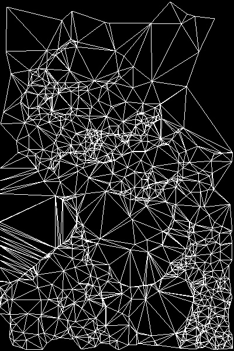
The output image after undergoing default processing
In the image above, the contours formed by the triangles roughly mimic the input image (although
someone unfamiliar with the original image would be unlikely to recognize Professor Pless in the
triangulated render).
However, each of the elements listed above (as well as the coloring mode used by the system) can
be tweaked by the user, allowing the same input image to generate the following output:
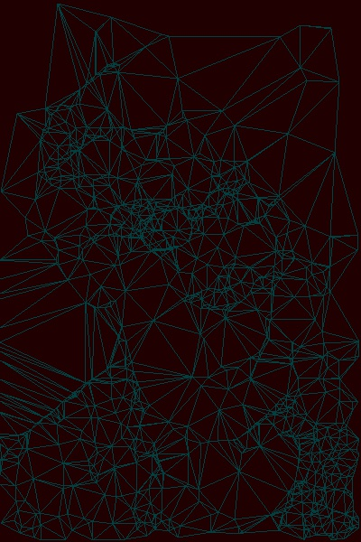
The output image after undergoing default processing
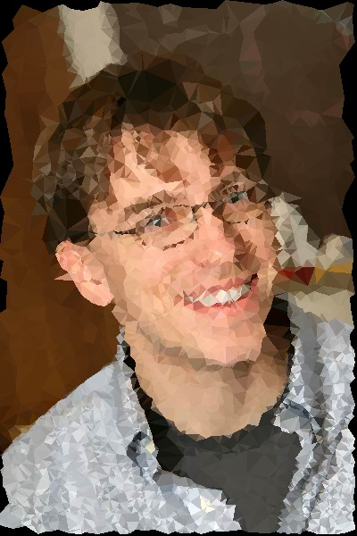
The output image after undergoing default processing
In addition to the obvious differences in tessellation granularity and coloring, the image on
the left highlights the influence that random sampling has on the output produced: aside from
modifying the foreground and background colors, the settings used were otherwise identical to
the image above, but some points are in noticeably different positions (particularly towards
the top left of the image). As was noted above, variations to a wide variety of factors can have
a dramatic impact on the images produced by the pipeline; the following images demonstrate some
of the effects that can be achieved.
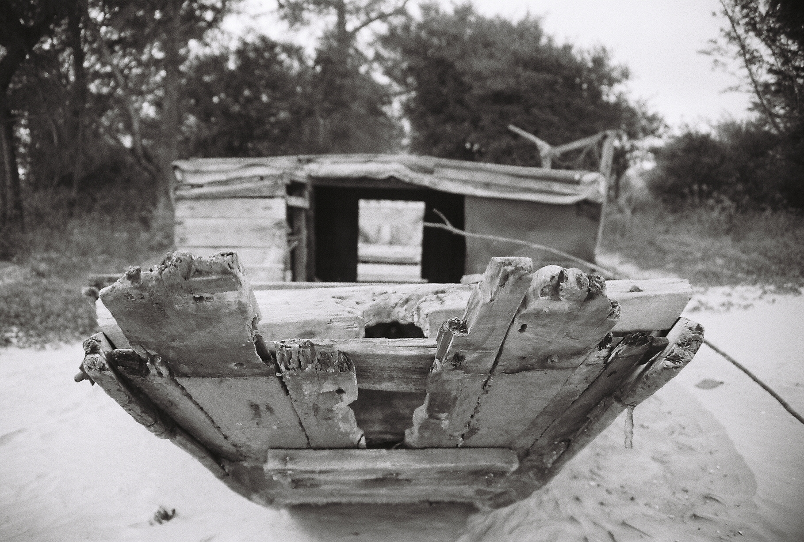
Input image of a beached boat
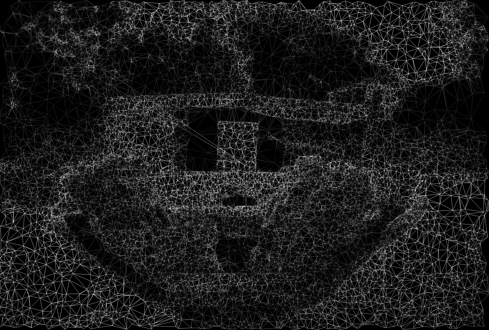
Resulting image using color sampling
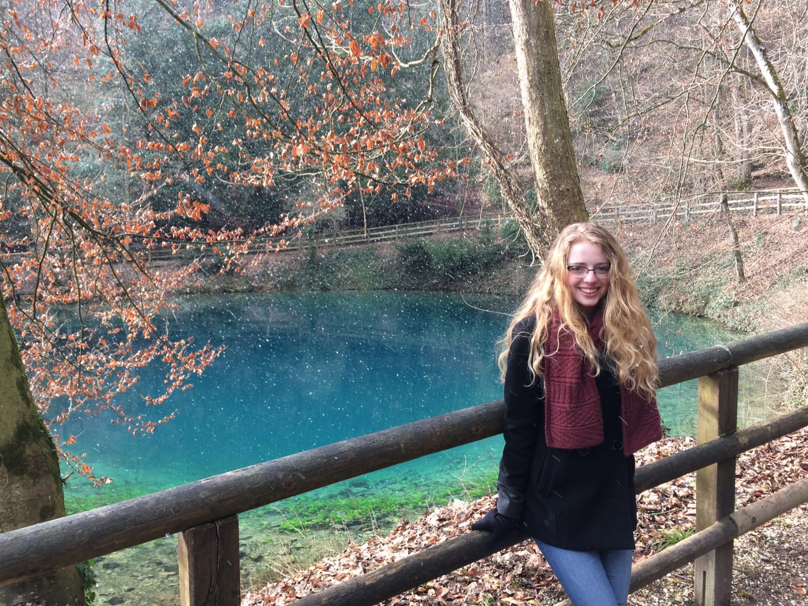
Input image of Blautopf in Blaubeuren, GermanyResulting image using centroid sampling
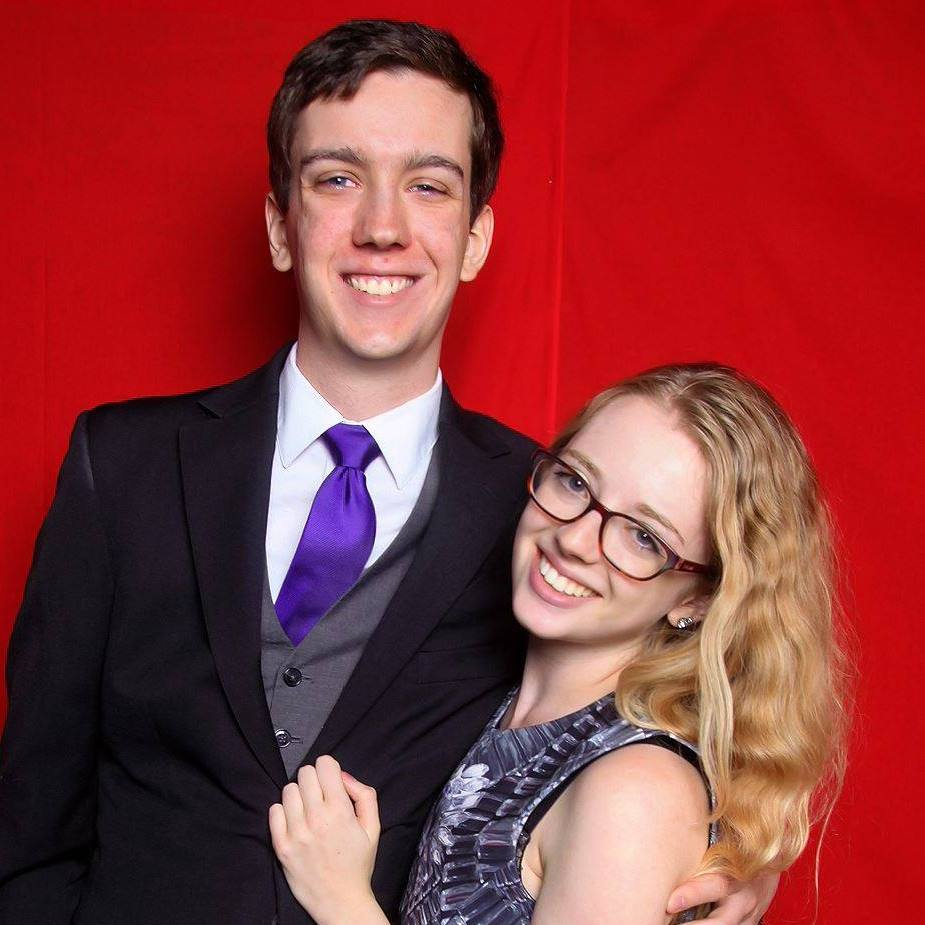
Input image of a formal portrait
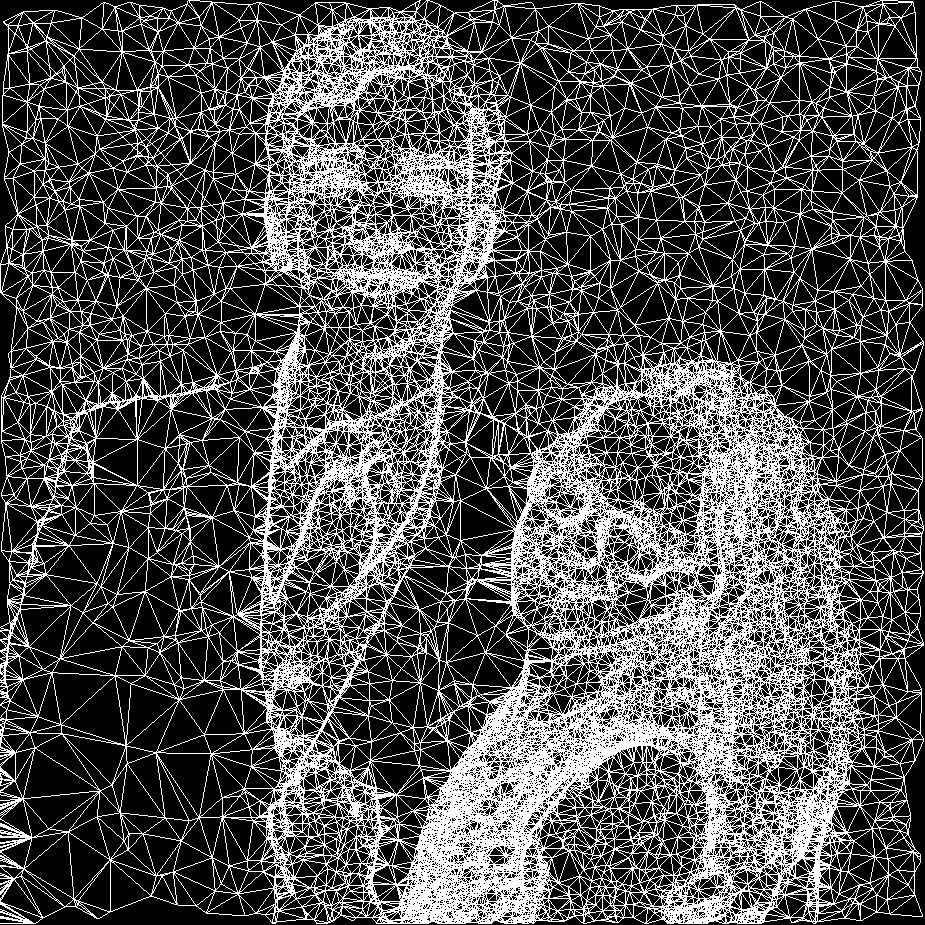
Resulting image using a high point ratioInput image of a formal portrait
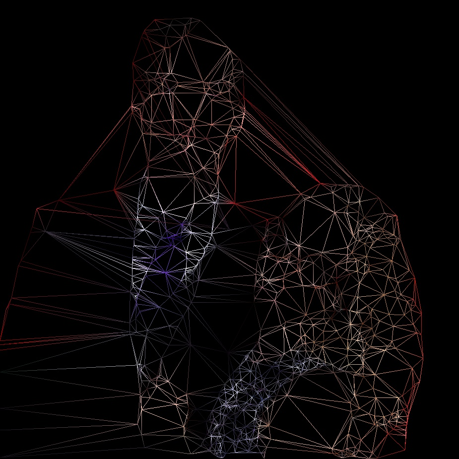
Resulting image using a low point ratioInput image Brookings Hall
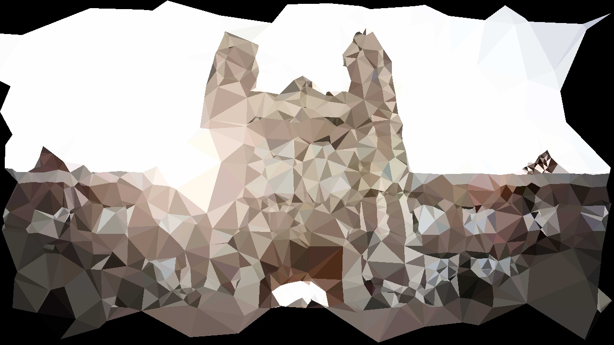
Resulting image using centroid sampling and a low point ratioInput image of the Maine coastline
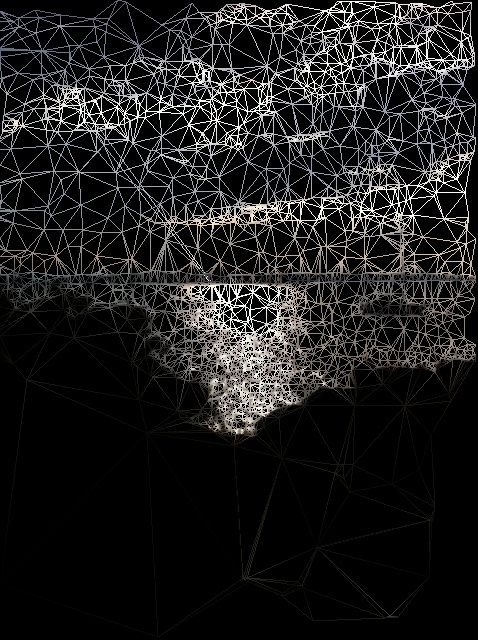
Resulting image using color samplingInput image of fall foliage
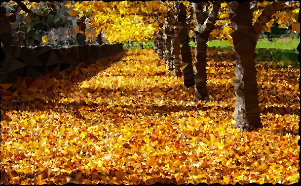
Resulting image using centroid sampling
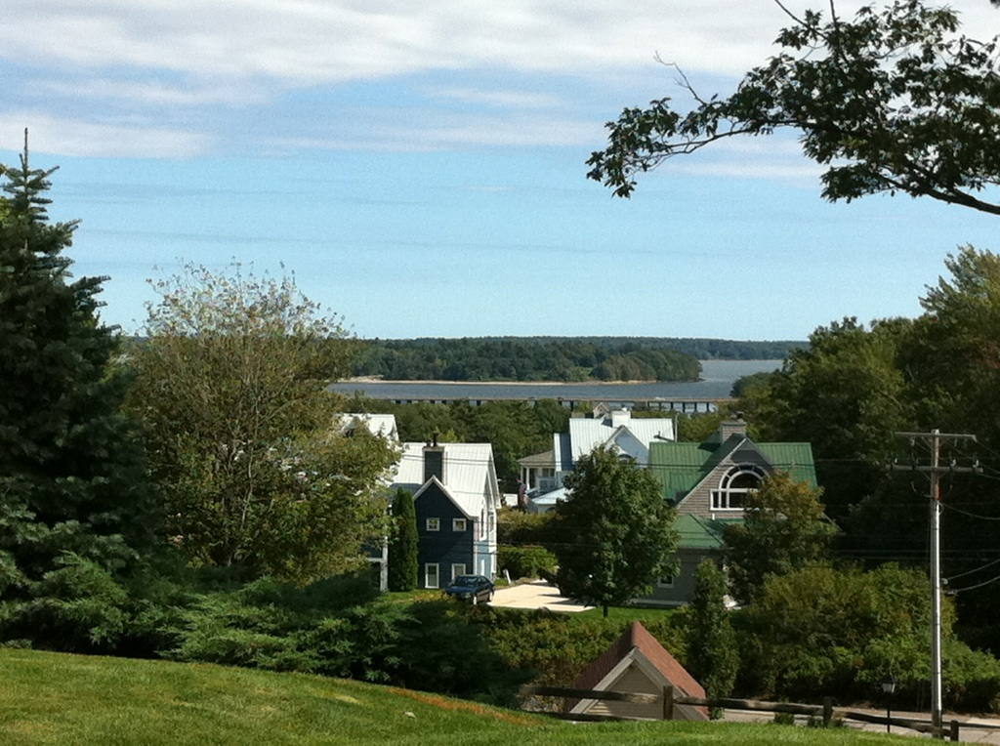
Input image of Mackworth Island in Portland, Maine
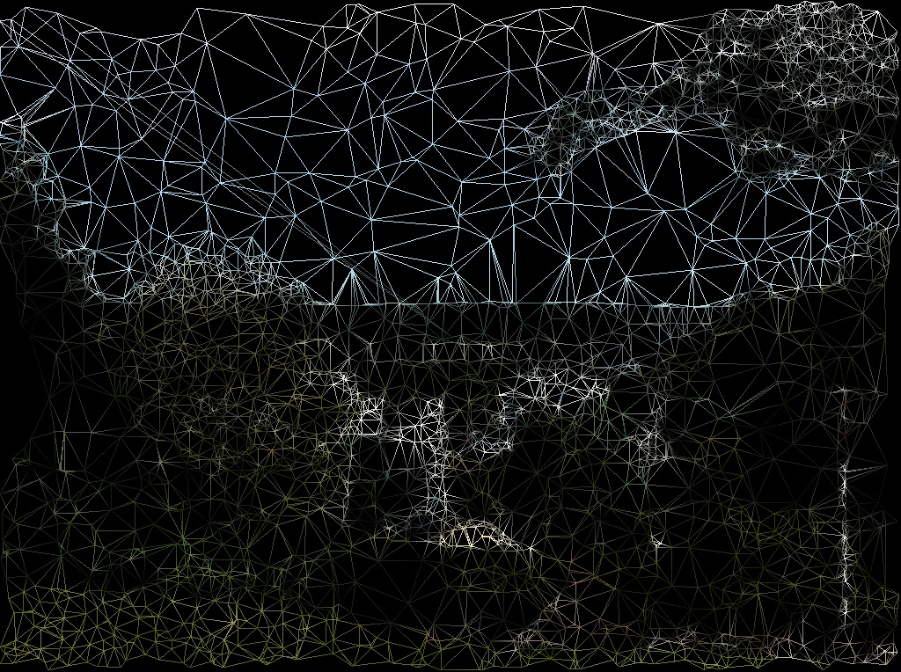
Resulting image using color sampling
In many of the images above, the tendency for triangles to cluster together in bright or
high-detail areas is quite clear (especially in the images of the Maine coastline). Even
without color data, many of the images are still recognizable by virtue of this clustering,
most noticeably in the two images generated from the formal portait. However, this clustering
can sometimes serve to rob other elements of the image of any level of detail: although the
lower half of the first image of Maine's coast is decidedly darker and features fewer
high-frequency edges than the top half, the specularity and rippling in the ocean take
precedence over just about everything else in the scene with respect to point placement. For
this reason, low-contrast or dark imagery doesn't do well with the pipeline as it's been
implemented: foliage in particular runs the risk of becoming an indistinct mass (such as in the
bottom left corner of the image of Mackworth island).
One of the things that caught me by surprise was the potential for the images produced by the
system to fall suddenly and dramatically into the uncanny valley. Images of faces rapidly become
disconcerting when rendered with a high point density using the color sampling mode: the image
has a recognizably human shape and coloration, but is distinctly off (in a way that came close
to body horror for some of the more extreme examples that I came across). I haven't included any
images of this phenomenon in this report, but I found that a point ratio of somewhere around
0.03 (meaning that around 3% of pixels will be sampled as points for triangulation) was the
lower threshold at which images moved from abstract to uncanny.
Overall, however, the tools exposed by the application allow for a broad range of expressiveness
and tuning, and (with some work) it's usually possible to make an input image look good with at
least one of the coloring modes. Ultimately, this was the broad-strokes goal of this project:
the finished pipeline is a tool for quickly and easily making artistic renderings of input
images without losing all of the granular control that comes from using more advanced tools such
as Photoshop.
Videos
Extending the pipeline to work with video data was relatively straightforward and was able to
produce a variety of compelling results:
Input video of a bird sitting on a wireResulting video using pixel coloring
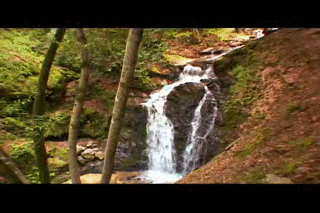
Input video of a waterfallResulting video using centroid coloringInput video of a waterfallResulting video using pixel coloringInput video of trees in the windResulting video using centroid coloring
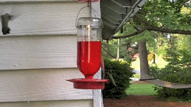
Input video of hummingbirdsResulting video using pixel coloringInput video of hummingbirdsResulting video using centroid coloring
The computed videos are able to preserve video dynamics quite well (especially evident in the
computed videos of the waterfall, which maintains the appearance of flowing water). However,
the triangulation techniques are ill-suited to conveying small-scale motion, especially in the
context of fine details, as is especially clear in the video of swaying trees. However, one of
the other confounds at work in that video was image resolution: the other source videos are all
640x480 standard definition videos; only the tree video was 1280x720 HD footage. This may have
impacted the quality of the results and definitely impacted the efficiency of the
rendering pipeline, which performed noticeably faster on the other source videos.
Effects of Parameters
Each of the images in the following tables can be clicked to view a larger version.
This is now the second project that I have implemented with GPGPU technology (the first being
the Prokudin-Gorskii image alignment and recoloring project with which the semester began,
described here); as such, I
came into this project with some hard-won development experience from my first outing. However,
GPGPU development is radically different from traditional CPU-based development (which is where
the bulk of my experience lies), and my prior experience can in no way be considered to apporach
expertise. As such, the bulk of the issues that I faced in development stemmed from the inherent
challenges of working in an unfamiliar environment, especially one as foreign and difficult to
debug as the GPU.
The first of these overarching problems was the difficulty of adapting to massively-parallel
algorithm design. This was one of the main reasons that I sought out an existing solution for
computing a prefix-sum when calculating the distribution; developing my own implementation which
was robust enough to stand up to a variety of input types would have eaten up a significant
amount of development and debugging time which would be only tangentially related to the stated
goals of the project.
A second major issue which arose on multiple occasions was the difficulty of maintaining a
consistent view of memory throughout the execution of a CUDA kernel. Although these kernels
logically execute in parallel and some synchronization primitives have been provided (such as
the life-savingly useful __syncthreads() function), synchronization can only be
easily achieved between threads within a given block—and with potentially hundreds of
blocks running at the mercy of the GPU's scheduler, guaranteeing the ordering of memory accesses
is extremely difficult, and I found myself running up against bugs on multiple occasions. This is
in no small part why my implementation has such a large memory footprint on the GPU: the easiest
way to ensure that memory is consistent is to seperate input and output buffers. Although it
might be possible to reduce this footprint through more clever reuse of working buffers or more
advanced synchronization tools, I ultimately didn't think that it was worth focusing on those
elements of the pipeline (as it's far more important to have a working system than to have a
beautifully efficient—but incomplete—system).
One of the other issues which caught me by surprise was the amount of overhead associated with
the curand_init() function if not used carefully. When I first attempted to use
cuRAND, I caused my computer to crash multiple times due to the GPU becoming unresponsive while
it attempted to set up the random number generator (with one of the crashes being severe enough
that I was afraid that I had done lasting damage to my GPU). Much like developing in
kernelspace, GPGPU development operates in a high-risk environment without all of the usual
safety and liveness features guaranteed in a standard userspace application. Although the OS
and the GPU driver do their best to ensure memory safety and other such features, it's still
ultimately easier to write dangerously broken code on the GPU.
Working with both OpenGL and CUDA simultaneously meant juggling two interdependent and difficult
systems, neither of which I have used extensively. As such, determining the exact source of bugs
was frequently difficult (for instance, I was unsure for a long time if the reason that OpenGL
wasn't drawing anything was because my graphics code was incorrect or because I wasn't feeing
it any data to draw with).
Even without the difficulties of CUDA interoperability, coming to understand OpenGL's default
behaviors took hours in and of itself (the 'helpful' insertion of word-aligned padding into
every row of an image when it's being copied was a particular bug that I spent the greater part
of an evening tracking down).
Future Work
Although this project is ostensibly complete (inasmuch as it is a project for a course which is
now ending), a significant amount of further development could be—and potentially will
be—done to improve the application. The following list are some of many future avenues for
future improvement which might make for interesting projects:
Using Image Pyramids in Edge Detection
As was reported above, edge data was far more useful than intensity data for determining the
positions at which points should be placed in the image. However, since only the highest
frequency edge data is computed in the current implementation of the pipeline, relying too
heavily on edge data will force points too strictly towards these edges. To mitigate this effect
and to increase the amount of data being used to determine the positions of sampled points,
edges could be detected at multiple scales through the use of an image pyramid (or another,
similar technique). Having multi-scale edge data would preserve the nice qualities of points
sampled on existing edges (since these tend to be the most recognizable featrues of images),
but with the added feature of drawing from a wider range of possible values (as low-frequency
edge data appears as a sort of 'smear' when viewed at the original resolution of the image).
Improved Voronoi Diagram Generator
For the sake of simplicity, my current implementation uses a naïve algorithm for computing
the Voronoi diagram that only marignally leverages the power of massive parallelism. For
instance, this
paper is the one referenced in the GPU-CDT paper discussed above which they used for efficient
Delaunay triangulation. Swapping to this (or an equivalent) implementation would alleviate one
of the most significant bottlenecks in the system as it currently stands.
Optimized Memory Access Patterns
Optimizing GPGPU code lies in the subtle art of controlling memory access patterns, an area in
which I have little to no experience and an aspect of development that I made no particular
effort to focus on during this project (as a functional application will always outperform a
fast one). Controlling the sequence of memory accesses and experimenting with different memory
types (such as __constant__ or __shared__, each of which has the
improve system performance by 50% or more).
Expanded Coloring & Triangulation Modes
As it stands, only a handful of coloring modes and a single triangulation mode have been
implemented as part of the pipeline. Attempting to do work with constrained triangulation could
be beneficial in more accurately copying the source image, improving the quality of the results,
and extending the options in coloring modes would allow for a wider range of expression in the
images produced by the application (as well as some potentially valuable experience working with
more advanced features of OpenGL).
Improved Image & Video Code
Currently, I am relying on OpenCV for saving, loading, and displaying images; OpenCV's libraries
for doing each of the above are buggy and incomplete at best and actively missing or
non-functional at worst. On top of this, relying on OpenCV for this functionality adds an
otherwise unnecessary dependency to the system without much clear benefit. Transitioning to
different (or homemade) libraries for saving and loading images and relying on OpenGL for
displaying them would both improve and simplify the codebase—a win in every respect.
Porting from CUDA to OpenCL
Much like my desire to move away from OpenCV discussed above, moving from CUDA to OpenCL would
remove one of the major limitations on the usability of the application. On top of that, porting
the code would give me an opportunity to become familiar with OpenCL, broadening my
understanding and ability with respect to GPGPU development.
{kind=link}


{kind=link}
{kind=link}
{kind=link}
{kind=link}
{kind=link}
{kind=link}
{kind=link}
{kind=link}
{kind=link}
{kind=link}
{kind=link}
{kind=link}
{kind=link}